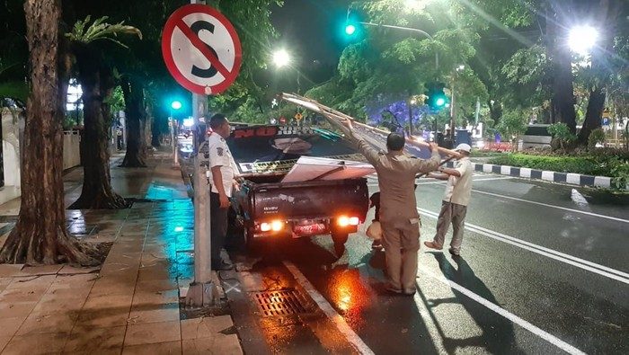
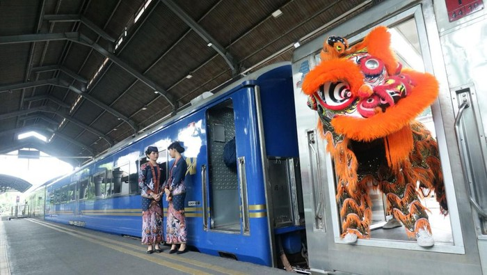
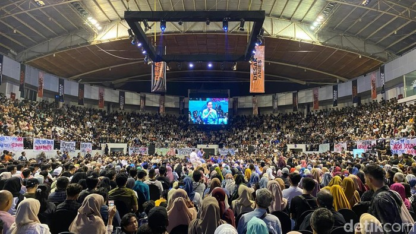

Penertiban APK di Surabaya Saat Masa Tenang Dimulai Minggu Dini hari

Jelang masa tenang pemilu yang akan dimulai esok
hari, Bawaslu Kota Surabaya akan mulai menertibkan
alat peraga kampanye (APK) di setiap sudut Kota Pahlawan.
Penertiban akan dilaksanakan dari jalan utama hingga
perkampungan pada Minggu (11/2) dini hari.
Ketua Bawaslu Kota Surabaya Novli Bernado Thyssen
mengatakan pihaknya telah melakukan koordinasi dengan
berbagai pihak dalam rangka penertiban APK di masa
tenang kampanye. Salah satunya dengan Satpol PP Surabaya.
untuk selengkapnya klik disini
Atraksi Barongsai Warnai Perayaan Imlek di Stasiun Gubeng Surabaya

Warga Tionghoa merayakan Tahun Baru Imlek ke-2575 pada
hari ini. Sejumlah kegiatan digelar untuk memeriahkan
perayaan Imlek. Salah satunya yang pasti dihadirkan adalah atraksi barongsai.
Kali ini, atraksi barongsai menyapa dan menghibur para
penumpang kereta api di Stasiun Gubeng Surabaya. Dalam aksinya,
barongsai tak hanya beratraksi, tapi juga memberikan kue
keranjang kepada Executive Vice President KAI Daerah Operasi
8 Surabaya, Wisnu Pramudyo. Ini sebagai simbol
penghormatan dan juga rezeki bagi perusahaan.
Manager Humas KAI Daop 8 Surabaya Luqman Arif mengatakan
selain melakukan atraksi, barongsai juga membagikan puluhan
kue keranjang dan minuman kepada penumpang yang menunggu
keberangkatan kereta api di Stasiun Gubeng. Lalu, memberikan kejutan
berupa undian berhadiah. untuk selengkapnya klil disini
Berdesak-desakan Saat Desak Anies Terakhir yang Digelar di Surabaya

Acara Desak Anies di Surabaya dihadiri ribuan pendukung.
Mereka didominasi mahasiswa. Mereka rela antre dan hadir
menyampaikan aspirasinya ke capres Anies Baswedan sebagai calon presiden nomor urut 1.
Emadina Putri, mahasiswa asal Unair yang dijumpai detikJatim juga
menyampaikan bahwa dirinya sengaja datang ke acara Desak
Anies ini untuk menyampaikan aspirasinya serta
mengikuti proses demokrasi yang sedang berjalan.
"Sengaja datang berharap bisa menyampaikan aspirasi,
selain itu sekaligus mengikuti bagaimana proses demokrasi
yang sedang berlangsung di Indonesia saat ini," tutur salah satu
peserta, Jumat (9/2/2024). untuk selengkapnya klik disini
Keuangan
| Anggaran Per-tahun |
link |
| Transparansi anggaran 2021 |
Disini |
| Transparansi anggaran 2022 |
Disini |
| Transparansi anggaran 2023 |
Disini |
| Transparansi anggaran 2024 |
Disini |
Prestasi Kota Surabaya
2023
- Penghargaan ASEAN Environtmentally Sustainable City (ESC) kategori Udara Terbersih Kota Besar
- Penghargaan Daerah Ramah Perempuan dan Layak Anak (DPRLA) Tahun 2023, dari Kementerian Pemberdayaan Perempuan dan Perlindungan Anak Republik Indonesia
- Pemenang Pertama Penilaian Kinerja Pemerintah Daerah Bidang Kebinamargaan Kategori Pemerintah Kota Surabaya, dari Kementerian PUPR
- Anugerah Revolusi Mental 2023, dari Wakil Presiden RI
- POTAS Award Kategori Tokoh Inspiratif Dalam Upaya Percepatan Pengentasan Kemiskinan di Kota Surabaya
- Anugerah Antara Jatim 2023 kategori Teknologi Informasi Komunikasi
- Indonesia Healthcare Innovation Award, untuk Percepatan Penurunan Stunting dan Aplikasi Sayang Warga
- Dll
2022
- Penghargaan Kota Terinovatif dalam Penganugerahan Innovative Government Award (IGA) Tahun 2022, pada inovasi aplikasi e-Peken dan program Jagoan Cegah Stunting (Jago Centing), dari Kementerian Dalam Negeri (Kemendagri) RI
- Penghargaan Kota Peduli Hak Asasi Manusia (HAM), dari Kementerian Hukum dan Hak Asasi Manusia (Kemenkumham) RI
- Penghargaan Top 30 Kompetisi Inovasi Pelayanan Publik (Kovablik) Tahun 2022, pada Inovasi Program Lontong Balap (Layanan Online Terpadu One Gate System bersama Dinas Kependudukan dan Pencatatan Sipil dan Pengadilan Negeri), dari Pemerintah Provinsi Jawa Timur.
- Penghargaan Pembina Terbaik Terhadap Sentra Pangan, dari Kementerian Kesehatan (Kemenkes) Republik Indonesia (RI)
- Capaian Opini Wajar Tanpa Pengecualian (WTP) dalam penyusunan laporan keuangan Pemkot Surabaya Tahun Anggaran 2021, dari Kementerian Keuangan (Kemenkeu) Republik Indonesia (RI)
- Kota nomor satu Terbaik dalam Inovasi Penggerakan Sasaran Pelaksanaan Imunisasi Tambahan MR (Bulan Imunisasi Nasional) dengan Pelibatan Berbagai Lintas Sektor, Mitra, Akademisi (Pentahelix)
- Penghargaan Pelaksanaan 10 (Sepuluh) Tatanan Kabupaten/Kota Sehat
- Dll
2021
- Innovative Government Award (IGA) 2021, Kategori Kota Terinovatif dari Kemendagri RI
- Ombudsman Awards 2021 Predikat Kepatuhan Tinggi Standar Pelayanan Publik tahun 2021 Zona Hijau Kategori Kota, dari Ombudsman RI
- Anugerah Media Humas 2021, Bakohumas-Kementerian Kominfo RI
- Penghargaan Adiwiyata Provinsi, untuk 11 Sekolah dan Eco Pesantren yang ada di Surabaya
- Penghargaan dari Kementerian Investasi/Badan Koordinasi Penanaman Modal (BKPM) Republik Indonesia (RI), Untuk partisipasi Penerbitan dan pembagian Nomor Induk Berusaha (NIB) pelaku Usaha Mikro dan Kecil (UMK) Perseorangan
- Anugerah Widya Wiyata Dharma Samya, dari Unesa Surabaya
- Penghargaan di bidang kesehatan dalam upaya penanganan Covid-19 terbaik dari Pemerintah Provinsi (Pemprov) Jawa Timur
- Dll